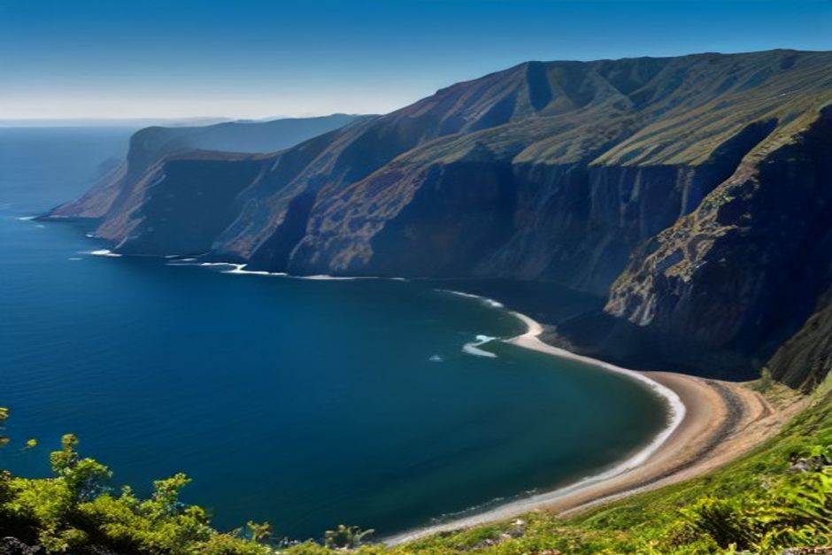
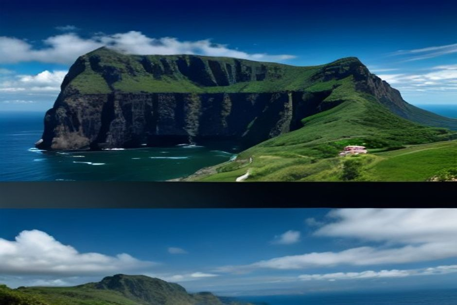

La Riserva Naturale del Garajau è un tratto protetto di costa e fondale marino vicino a Caniço, sulla costa sud di Madeira, istituito nel 1986 come prima riserva marina del Portogallo. Decenni di divieto di pesca hanno trasformato una barriera un tempo impoverita in una delle zone con la più alta densità di vita marina dell'isola. Ecco cosa protegge davvero, cosa si vede sott'acqua e come raggiungerla.
Cos'è la Riserva Naturale del Garajau?
È un'area marina legalmente protetta che si estende per circa sette chilometri di costa tra Ponta do Lazareto, ai margini di Funchal, e Ponta da Oliveira, a Caniço. Creata nel 1986, fu la prima riserva marina istituita in tutto il Portogallo, anni prima che protezioni simili arrivassero sul continente. La riserva comprende sia gli scogli costieri sia il fondale marino fino a una profondità stabilita, ed è oggi gestita dall'autorità regionale di Madeira per la conservazione della natura.

Perché il Garajau è diventato la prima riserva marina di Madeira?
Perché la barriera era stata pescata quasi a vuoto. Negli anni '80, decenni di pesca subacquea e di reti lungo questo tratto di costa vulcanica avevano quasi azzerato le specie più grandi e a crescita più lenta — i pesci che impiegano anni a maturare furono i primi a sparire. La legge del 1986 vietò del tutto la caccia e la pesca entro i confini della riserva, dando alla barriera l'unica cosa che un fondale sovrasfruttato raramente riceve: tempo lasciato completamente in pace. Divenne il modello su cui furono poi costruite le altre riserve marine di Madeira, compresa quella intorno alle Isole Desertas.
Cosa si vede sott'acqua al Garajau?
Pesci che sono invecchiati, il che è più raro di quanto sembri. Decenni senza pressione di pesca fanno sì che il Garajau ospiti oggi una popolazione sana di cernia bruna — una specie che può vivere per decenni e diventa più pesante quanto più a lungo viene lasciata indisturbata, quindi un esemplare grande qui è un segno diretto che la protezione funziona. Le murene si nascondono nelle fessure delle rocce, le anguille giardiniere ondeggiano nelle zone sabbiose, e polpi e grandi banchi di saraghi e castagnole si muovono sulla barriera in numeri che non si vedono sulla costa non protetta nelle vicinanze. Le razze, incluso occasionalmente il diavolo di mare, attraversano le acque più profonde ai margini della riserva.

La statua del Cristo Rei fa parte della riserva?
Non legalmente, ma è il punto di riferimento inconfondibile della riserva. La statua di 15 metri del Cristo Re si erge sulla scogliera di Ponta do Garajau, con le braccia aperte verso l'Atlantico, inaugurata nel 1927 — pochi anni prima della celebre versione di Rio de Janeiro e costruita nello stesso stile Art Déco dallo scultore francese Georges Serraz. Sorge proprio sopra le acque che oggi sorveglia, e il belvedere alla sua base offre uno dei migliori panorami gratuiti della costa sud di Madeira, con vista diretta sulla barriera che porta il suo stesso nome.
Si può fare immersione o snorkeling al Garajau, e dove si va?
Sì, ed è il motivo principale per cui la gente viene qui. Il punto di accesso pubblico è a Caniço de Baixo, dove una piattaforma sulla spiaggia porta direttamente nelle acque della riserva, rendendolo uno dei posti più facili dell'isola per fare snorkeling senza barca. Diversi diving center hanno sede nella stessa piccola località e organizzano regolarmente immersioni in barca e da riva all'interno della riserva, con una visibilità che in estate supera spesso i 20 metri. Chi fa snorkeling in autonomia dovrebbe restare vicino alla riva e lontano dagli ormeggi delle barche da diving, poiché alcune zone sono riservate al traffico delle immersioni.
Si può raggiungere il Garajau in barca da Funchal?
Sì — è un breve tratto verso est lungo la costa dalla Marina do Funchal, abbastanza vicino che le barche di base nella marina lo costeggiano dirigendosi verso Caniço e Santa Cruz. Le rotte di Chifbay vanno nella direzione opposta, verso ovest, verso Câmara de Lobos, Cabo Girão e Fajã dos Padres, ma lo stesso principio vale a entrambe le estremità della costa: una barca privata ti porta direttamente sopra un'acqua che vale davvero la pena guardare, invece di osservarla da una strada in cima alla scogliera.
Quarant'anni di aver lasciato in pace una sola barriera hanno fatto per lei più di quanto potrebbe fare qualsiasi programma di ripopolamento.
Il Garajau non è spettacolare come Cabo Girão o le Isole Desertas — non ci sono scogliere maestose né spettacoli di fauna in mare aperto. Ciò che offre invece è più discreto e, a suo modo, più notevole: la prova di come appare la costa di Madeira quando viene semplicemente lasciata libera di riprendersi.